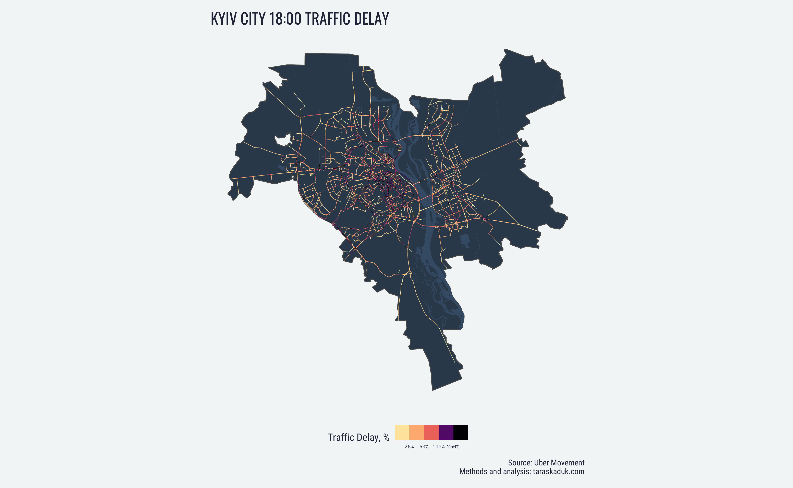
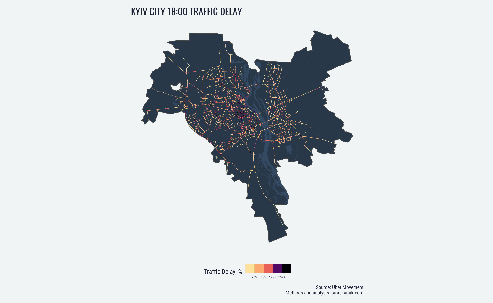

Table of Contents
Introduction
The COVID-19 pandemic has impacted many areas of life far beyond human health. It has already had a major impact of economy, ecology, education, technology, finance etc - all too many to enumerate. It will remain a phenomenon that scientists will study for decades to come.
Among some of the impacted domains is the urban life, and in particular - how do the COVID-19-related restrictions alter city traffic and congestion. Plenty of research in this area has already been done (Romei and Burn-Murdoch 2020), (Plumer and Popovich 2020), (Geotab Data & Analytics Team 2020), (Wang et al. 2020), (Abu-Rayash and Dincer 2020). One of the most prominent features of such analyses, however, is that the data used in them is either proprietary, exists behind a paywall or a “freemium”-type arrangement, or is pre-aggregated.
In this article, I will attempt to examine the impact of COVID-19-related restrictions of city traffic using the data that is available for free: [Uber Movement traffic data[(https://movement.uber.com/)
Data, Materials, Methods
As mentioned above, for this analysis, I used data provided by Uber Movement (Uber Technologies, Inc 2020). Other data sources, such as TomTom Historical Traffic Stats, on which more elaborate traffic studies are based (TomTom 2020) (Romei and Burn-Murdoch 2020), exists. However, obtaining such data points are often associated with pay walls of “freemium” developer accounts, which is completely understandable, yet which at the same time complicates the progress of citizen data science.
The benefit of working with Uber Movement data is its free availability. The downside is in the limits of traffic data’s availability: at the time of this writing in October 2020, some Uber Movement data is available for only 60 cities worldwide and mostly up through 2020-03-31.
Initial Data
Obtaining the data can be done via NPM Uber Movement Data Toolkit, or directly from https://movement.uber.com/ as .csv files.
The streets data contains multiple road segments each several meters long and identified by OSM IDs: way ID, start node ID, end node ID. An additional step was taken to only include road segment within administrative city boundaries.
As far as speed data, Uber Movement can provide daily data on an “hour” grain level for the above mentioned road segments. Variables provided are mean speed and speed standard deviation. To summarize, each observation includes mean speed and standard deviation for a particular short road segment on a specific hour of a specific day.
Data Transformation
To get the final metric of traffic delay (expressed as a %), a series of data transformation steps was taken:
- each segment’s length was obtained from the geometry data;
- given each segment’s length and mean speed, average travel was obtained;
- for every segment, using daytime weekend data1, maximum speed was obtained for every Saturday and Sunday, and the mean of these maximum weekend daytime speeds was established as segment’s benchmark speed.
- with maximum speeds available, “best time” was calculated for every observation, and the difference between actual travel time and “best time” constituted a time delay.
- in every subsequent grouping and aggregation, delays and “best” times would be summed up, and diving total delay time by total “best time” produced the final metric.
Code
Due to a large size of data necessary to work on this project, the analysis has been broken down into several parts:
- The geospatial data about Kyiv city is pulled from OSM using osmdata package (Padgham et al. 2017). The code and the output are stored in taraskaduk/kyiv_osm repo on GitHub
- The raw data from Uber Movement was transformed and both the code and the output are stored in taraskaduk/uber-movement repo on GitHUb
- The final aggregations and visualizations are saved in the RMarkdown document that generates this web page. It should be located within the taraskaduk/taraskaduk-distill repository responsible for publishing the entire site
Results
Typical traffic patters
From the most recent available data set from January 1, 2020 to March 31, 2020, 2 months between January 12 and March 12 can be used to display the recent typical traffic: January 1-14 are considered holidays and March 12 through the end of the data set were the dates under COVID-19 quarantine.
The typical traffic in Kyiv has all expected attributes of any large city: increased congestion during week days, especially during rush hours.

Spatially, a typical weekday traffic flow can be visualized in the following manner:


The most problematic segments during rush hour can be visualized as follows:
 

The pattern here is clear: the heaviest morning traffic at 8:00 is experienced at bridges and main highways moving people from the edges of the city into CBD, while the heaviest evening traffic at 18:00 is concentrated in the city center’s, with a literal gridlock of cars trying to get out.
Aggregating the data from small segments to full streets, we can identify the streets that are backed up the most overall, at the 8:00 peak and at the 18:00 peak.


COVID-19 Quarantine Impact
What we can also imply from these Uber Movement data sets is how the traffic was affected following the initial lockdown measures put in place to prevent the spread of COVID-19, with most countries reacting around February-March 2020.
The initial lockdown in Kyiv was initiated on March 12, 2020, which is very clear from the average delays on the roads of the city.
Daily traffic delays decreased immediately after the imposed lockdown:

The effect is also visible on the hourly level, and for every day of the week, including weekends:


Discussion
Unfortunately, the data provided by Uber Movement only goes up to March 31, 2020. Therefore, at this moment in time, it becomes impossible to evaluate the long-term effect of the lockdown, the easing of the restrictions, or the public fatigue on the traffic delays.
Nevertheless, this analysis provides a basis for such future examination, whenever more recent data becomes available. The analysis also allows to perform a similar analysis for any of the 60 cities for which the data is available. The R code used to create this analysis can be repurposed for other cities with minimal changes (see “Code” section for links to the R code behind this analysis).
Abu-Rayash, Azzam, and Ibrahim Dincer. 2020. “Analysis of Mobility Trends During the COVID-19 Coronavirus Pandemic: Exploring the Impacts on Global Aviation and Travel in Selected Cities.” Energy Research & Social Science 68 (October): 101693. https://doi.org/10.1016/j.erss.2020.101693.
Geotab Data & Analytics Team. 2020. “The Impact of COVID-19 on Congestion and Commercial Traffic in Cities.” Geotab. https://www.geotab.com/blog/congestion-and-commercial-traffic/.
Padgham, Mark, Bob Rudis, Robin Lovelace, and Maëlle Salmon. 2017. “Osmdata.” The Journal of Open Source Software 2 (14). https://doi.org/10.21105/joss.00305.
Plumer, Brad, and Nadja Popovich. 2020. “Traffic and Pollution Plummet as U.S. Cities Shut down for Coronavirus.” The New York Times, March. https://www.nytimes.com/interactive/2020/03/22/climate/coronavirus-usa-traffic.html.
Romei, V, and J Burn-Murdoch. 2020. “Real-Time Data Show Virus Hit to Global Economic Activity.” Financial Times, Available at: Https://Www.ft.com/Content/D184fa0a-6904-11ea-800d-Da70cff6e4d3 (Accessed 30 April 2020).
TomTom. 2020. “Helsinki Study on Traffic Flow Relies on TomTom Historical Traffic Data.” https://download.tomtom.com/open/banners/Helsinki-Case-Study-Traffic-Stats.pdf.
Uber Technologies, Inc. 2020. “Uber Movement.” https://movement.uber.com/.
Wang, Ding, Brian Yueshuai He, Jingqin Gao, Joseph Y. J. Chow, Kaan Ozbay, and Shri Iyer. 2020. “Impact of COVID-19 Behavioral Inertia on Reopening Strategies for New York City Transit.” arXiv:2006.13368 [Physics, Q-Fin], June. http://arxiv.org/abs/2006.13368.
Nighttime data was avoided due to an increased probability of excessive speeding, which would skew the data. Instead, weekend daytime speeds were analyzed to establish the benchmark↩︎